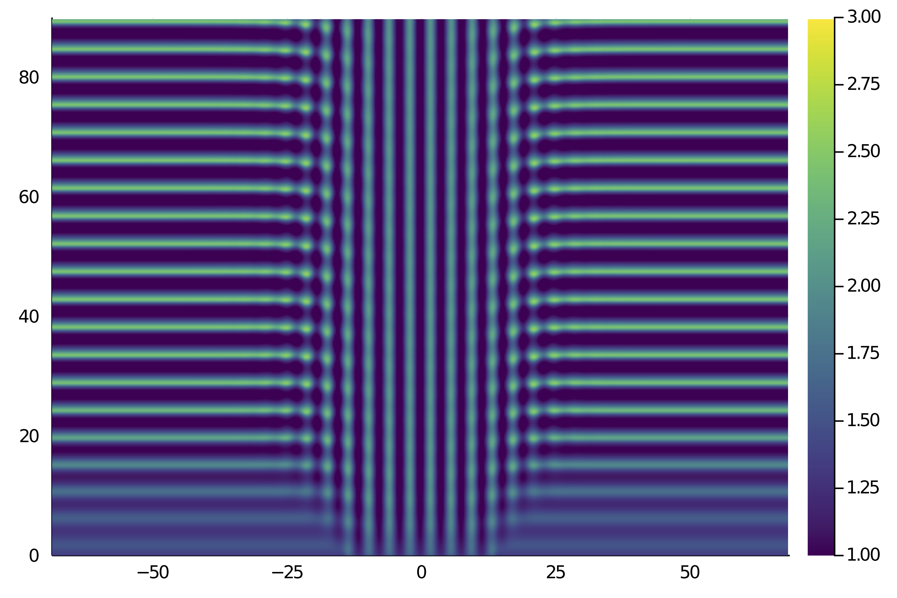
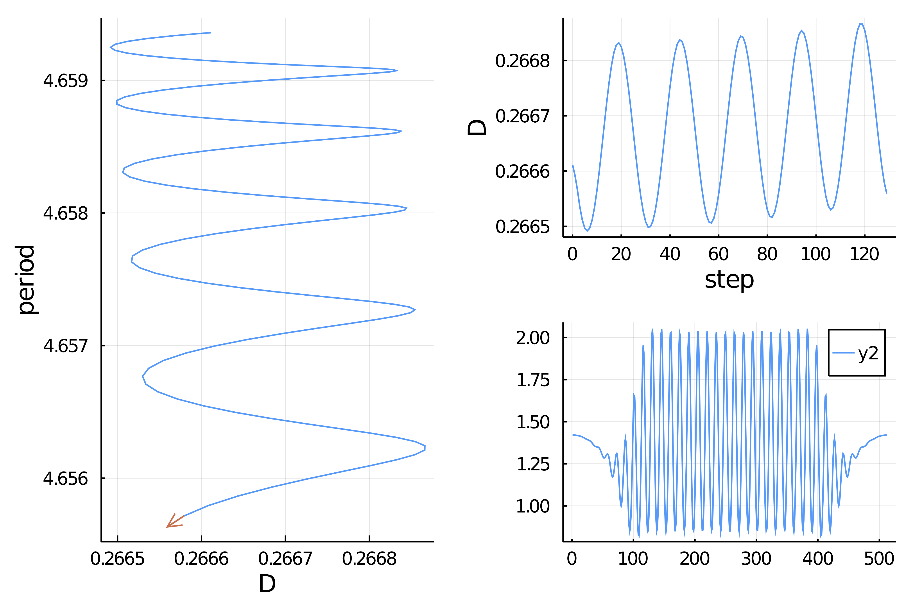

Brusselator 1d with periodic BC (experienced user)
This example is taken from [Tzou].
The example was done in collaboration with Navid C. Constantinou.
We look at the Brusselator in 1d. The equations are as follows
with periodic boundary conditions. These equations have been introduced to reproduce an oscillating chemical reaction.
We focus on computing a snaking branch of periodic orbits using spectral methods implemented in Brusselator.jl:
using Revise, BifurcationKit
using Brusselator, Plots, Parameters, ForwardDiff, LinearAlgebra, Setfield, DiffEqBase
using FFTW: irfft
const BK = BifurcationKit
dev = CPU() # Device (CPU/GPU)
nx = 512 # grid resolution
stepper = "FilteredRK4" # timestepper
dt = 0.01 # timestep
nsteps = 9000 # total number of time-steps
nsubs = 20 # number of time-steps for intermediate logging/plotting (nsteps must be multiple of nsubs)
# parameters for the model
E = 1.4
L = 137.37 # Domain length
# Parameters used by Tzou et al. (2013)
ε = 0.1
μ = 25
ρ = 0.178
D_c = ((sqrt(1 + E^2) - 1) / E)^2
B_H = (1 + E * sqrt(D_c))^2
B = B_H + ε^2 * μ
D = D_c + ε^2 * ρ
kc = sqrt(E / sqrt(D))
# building the model
grid = OneDGrid(dev, nx, L)
params = Brusselator.Params(B, D, E)
vars = Brusselator.Vars(dev, grid)
equation = Brusselator.Equation(dev, params, grid)
prob = FourierFlows.Problem(equation, stepper, dt, grid, vars, params, dev)
get_u(prob) = irfft(prob.sol[:, 1], prob.grid.nx)
get_v(prob) = irfft(prob.sol[:, 2], prob.grid.nx)
u_solution = Diagnostic(get_u, prob; nsteps=nsteps+1)
diags = [u_solution]We now integrate the model to find a periodic orbit:
l = 28;
θ = @. (grid.x > -l/2) & (grid.x < l/2)
au, av = -(E^2 + kc^2) / B, -1
cu, cv = -E * (E + im) / B, 1
u0 = @. E + ε * real( au * exp(im * kc * grid.x) * θ + cu * (1 - θ) )
v0 = @. B/E + ε * real( av * exp(im * kc * grid.x) * θ + cv * (1 - θ) )
set_uv!(prob, u0, v0)
plot_output(prob)
for j=0:Int(nsteps/nsubs)
updatevars!(prob)
stepforward!(prob, diags, nsubs)
end
# estimate of the periodic orbit, will be used as initial condition for a Kyrlov-Newton
initpo = copy(vcat(vcat(prob.vars.u, prob.vars.v), 4.9))
using RecursiveArrayTools
t = u_solution.t[1:10:nsteps]
U_xt = VectorOfArray([ u_solution.data[j] for j=1:10:nsteps ])
heatmap(grid.x, t, U_xt', c = :viridis, clims = (1, 3))which gives

Building the Shooting problem
We compute the periodic solution of (E) with a shooting algorithm. We thus define a function to compute the flow and its differential.
# update the states
function _update!(out, pb::FourierFlows.Problem, N)
out[1:N] .= pb.vars.u
out[N+1:end] .= pb.vars.v
out
end
# update the parameters in pb
function _setD!(D, pb::FourierFlows.Problem)
pb.eqn.L[:, 1] .*= D / prob.params.D
pb.params.D = D
end
# compute the flow from x up to time t
function ϕ(x, p, t)
@unpack pb, D, N = p
_setD!(D, pb)
# set initial condition
@views set_uv!(pb, x[1:N], x[N+1:2N])
pb.clock.t=0.; pb.clock.step=0
# determine number of time steps
dt = pb.clock.dt
nsteps = div(t, dt) |> Int
# compute flow
stepforward!(pb, nsteps)
rest = t - nsteps * dt
dt = pb.clock.dt
pb.clock.dt = rest
stepforward!(pb, 1)
pb.clock.dt = dt
updatevars!(pb)
out = similar(x)
_update!(out, pb, N)
return out
end
# differential of the flow by FD
function dϕ(x, p, dx, t; δ = 1e-8)
phi = ϕ(x, p, t)
dphi = (ϕ(x .+ δ .* dx, p, t) .- phi) ./ δ
return (t=t, u=phi, du=dphi)
endWe also need the vector field
function vf(x, p)
@unpack pb, D, N = p
# set parameter in prob
pb.eqn.L[:, 1] .*= D / pb.params.D
pb.params.D = D
u = @view x[1:N]
v = @view x[N+1:end]
# set initial condition
set_uv!(pb, u, v)
rhs = Brusselator.get_righthandside(pb)
# rhs is in Fourier space, put back to real space
out = similar(x)
ldiv!((@view out[1:N]), pb.grid.rfftplan, rhs[:, 1])
ldiv!((@view out[N+1:end]), pb.grid.rfftplan, rhs[:, 2])
return out
endWe then specify the shooting problem
# parameters to be passed to ϕ
par_bru = (pb = prob, N = nx, nsubs = nsubs, D = D)
# example of vector passed to ϕ
x0 = vcat(u0,v0)
# here we define the problem which encodes the standard shooting
flow = Flow(vf, ϕ, dϕ)
# the first section is centered around a stationary state
_center = vcat(E*ones(nx), B/E*ones(nx))
# section for the flow
sectionBru = BK.SectionSS(vf(initpo[1:end-1], par_bru), _center)
probSh = ShootingProblem(M = 1, flow = flow, ds = diff(LinRange(0, 1, 1 + 1)), section = sectionBru)Finding a periodic orbit
# linear solver for the Shooting problem
ls = GMRESIterativeSolvers(N = 2nx+1)
# parameters for Krylov-Newton
optn = NewtonPar(tol = 1e-9, verbose = true,
# linear solver
linsolver = ls,
# eigen solver
eigsolver = EigKrylovKit(dim = 30, x₀ = rand(2nx), verbose = 1 )
)
# Newton-Krylov method to check convergence and tune parameters
solp, = @time newton(probSh, initpo, par_bru, optn,
normN = x->norm(x,Inf))and you should see (the guess was not that good)
Newton Iterations f(x) Linear Iterations
0 1.6216e+03 0
1 4.4373e+01 6
2 9.0135e-01 15
3 4.9086e-02 32
4 4.1158e-03 27
5 6.0755e-03 33
6 2.4727e-04 33
7 3.7843e-05 34
8 1.9161e-07 31
9 4.3243e-09 40
10 2.3175e-13 27
83.615047 seconds (284.31 M allocations: 24.250 GiB, 6.28% gc time)Computation of the snaking branch
# you can detect bifurcations with the option detectBifurcation = 3
optc = ContinuationPar(newtonOptions = optn, ds = -1e-3, dsmin = 1e-7, dsmax = 2e-3, pMax = 0.295, plotEveryStep = 2, maxSteps = 1000)
bd, = continuation(probSh,
solp, par_bru, (@lens _.D), optc;
linearAlgo = MatrixFreeBLS(@set ls.N = 2nx+2),
plot = true,
verbosity = 3,
plotSolution = (x,p ; kw...) -> plot!(x[1:nx];kw...),
normC = x->norm(x,Inf))which leads to

Reference(s)
- Tzou
Tzou, J. C., Y.-P. Ma, A. Bayliss, B. J. Matkowsky, and V. A. Volpert. Homoclinic Snaking near a Codimension-Two Turing-Hopf Bifurcation Point in the Brusselator Model.” Physical Review E 87, no. 2 (February 14, 2013): 022908. https://doi.org/10.1103/PhysRevE.87.022908.